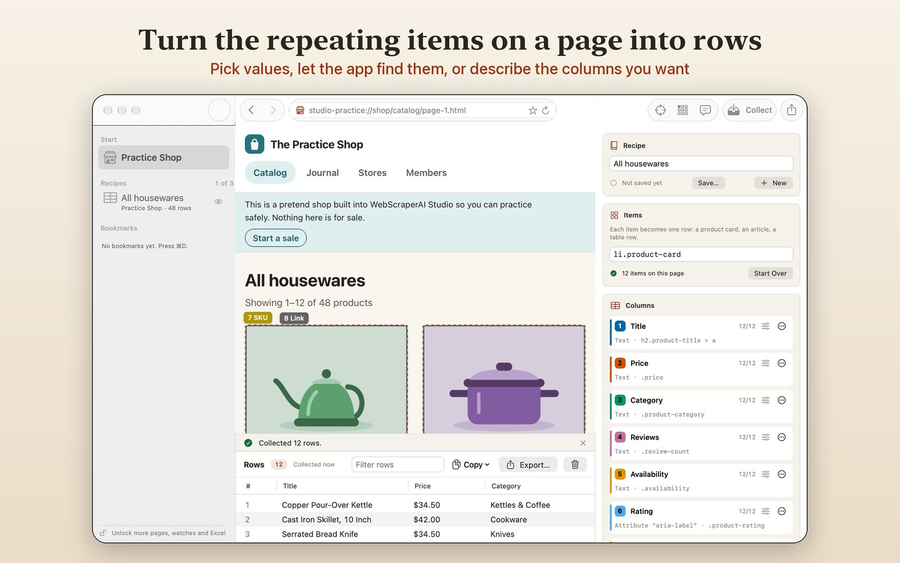
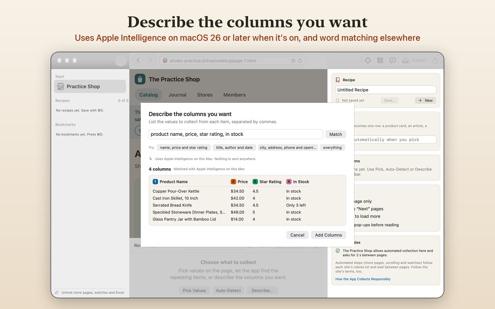
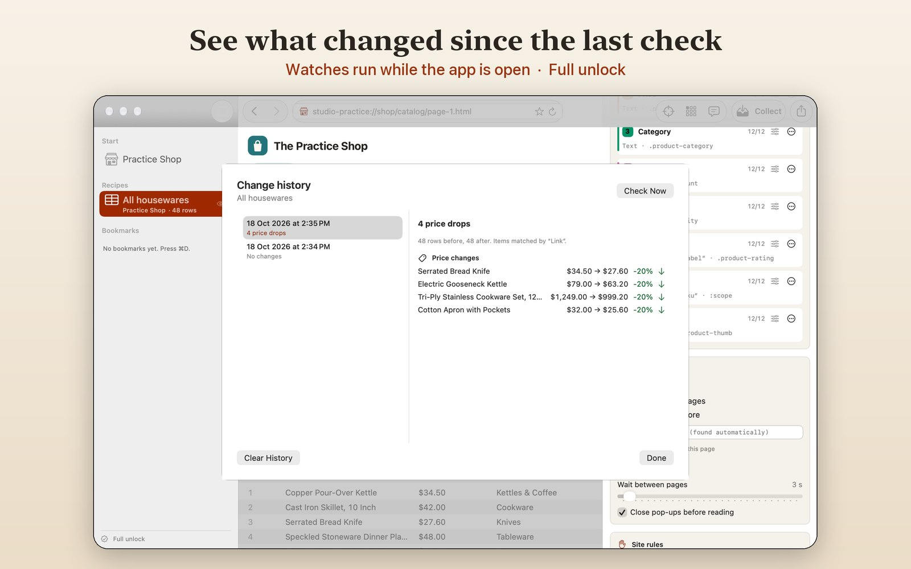

Turn web pages into tables
Point at the values you want on a page, collect them into rows, and export CSV, JSON or a spreadsheet. Watch pages and see what changed. Everything stays on your Mac.
For macOS 15 or later. Coming to the Mac App Store.

How it works
1 Choose what to collect
Click a value and the app finds it in every item, let it find the repeating items and suggest columns, or type the columns you want, such as “name, price, rating”.
2 Collect rows
Read the page that's open, or follow its “Next” links and scroll for more, up to 50 pages per run. Pop-ups are closed with their own Close buttons.
3 Export or watch
Save CSV, tab-separated text, JSON, Excel workbooks or SQLite databases, or keep a recipe and get told about new items and price changes.

Describe it in plain words
Apple Intelligence, on this Mac
On macOS 26 or later with Apple Intelligence turned on, Describe Columns uses Apple's on-device model to match your words to the page. Nothing is sent anywhere. On other Macs the app matches your words itself and says so.
Practice first
The built-in Practice Shop works offline. It has catalog pages, a journal that loads more as you scroll, a members area that's closed to automated tools, and a sale you can start to see a watch catch the price drops.

Watch for changes
New items and price changes
Have a saved recipe checked every hour, every 6 hours, daily or weekly. Each check lists new and removed items and price drops and rises, by name.
Only while the app is open
While a watch is on, closing the window keeps the app in the menu bar. Quitting stops all checks. There is no login item and nothing runs after you quit.
Collect responsibly
- Automated steps (more pages, scrolling and watches) read each site's robots.txt first and wait between pages: at least 2 seconds, or longer when the site asks.
- The app never answers cookie or consent prompts, never signs in for you, never solves CAPTCHAs and never downloads files.
- It names itself to sites as
WebScraperAIStudio, so site owners can tell it apart. - Use it on pages you're allowed to collect from, and follow each site's terms and the privacy laws that apply to you.
Free, and a one-time full unlock
| Free | Full unlock | |
|---|---|---|
| Pick, auto-detect and describe columns | Yes | Yes |
| Collect the page that's open | Yes | Yes |
| CSV, tab-separated and JSON export | Yes | Yes |
| Saved recipes | 3 | Unlimited |
| Collect across pages (up to 50) | No | Yes |
| Watch pages and get change alerts | No | Yes |
| Excel and SQLite export | No | Yes |
The full unlock is a single in-app purchase tied to your Apple Account, with no subscription. You can try it for 14 days first, once; the trial doesn't renew or charge.
Private by design
No account, no analytics, no tracking. Pages, rows and recipes stay on your Mac. Read the privacy policy.